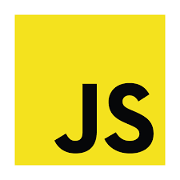
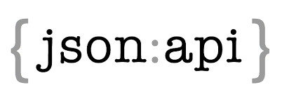
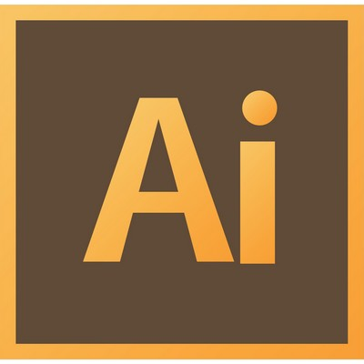

skills


- 


- 


- 

Created a website for a local Ophthalmology Practice in NJ where visitors can educate themselves on eye care and learn about the facility and it’s doctors.
Made with:
HTML, CSS
A Free Code Camp project. This viewer allows the user to enter a keyword to search for a relevant Wikipedia Page. Clicking the Surprise Me button takes the user to a random Wikipedia Page. The design is my take on a "google-like" page where there is no clutter or distractions from your search.
Made with:
HTML, CSS, JQuery, Wikipedia's API, Bootstrap
An application that shows weather in the users current location, can see a different image and icon depending on the weather, and can toggle between Fahrenheit and Celsius.
Made with:
Open Weather's API, JSON, JQuery, HTML, CSS
A Free Code Camp Project, featuring quotes from the Harry Potter books. I created a library of quotes for a JavaScript function to cycle through randomly after the user clicks the New Quote button. The user also has the ability to submit to their Twitter account the quote by clicking the Tweet button.
Made with:
HTML, CSS, JavaScript, Bootstrap
My first portfolio! This was a Free Code Camp project that wanted us to incoroporate our Bootstrap skills into a responsive website about me and what I've learned so far.
Made with:
HTML, CSS, Bootstrap
A Free Code Camp project featuring Tama the Train Station Master. This is my first project incorportating Bootstrap into the layout and getting re-familiarized with HTML and CSS.
Made with:
HTML, CSS, Bootstrap